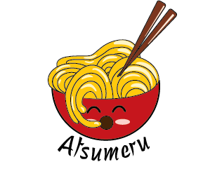
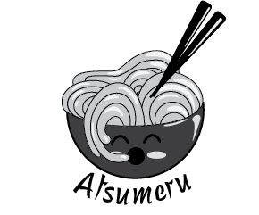

Atsumeru Logo
This is a logo created for a concept ramen restaurant by the name of Atsumeru. The idea was to create a logo that doubles as a mascot giving the restaurant a personality of its own and a character for consumers to connect with. The logo was designed in a cartoonish manner to give a friendly and inviting feel to the viewer that correlates with the atmosphere the restaurant provides. Red was used to give a strong emphasis to the design while yellow created balance to make the piece feel warm and less intimidating. Using rounded edges and shapes helped to further this feeling.